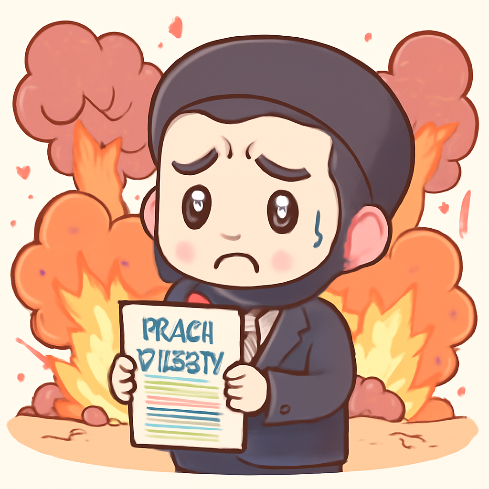
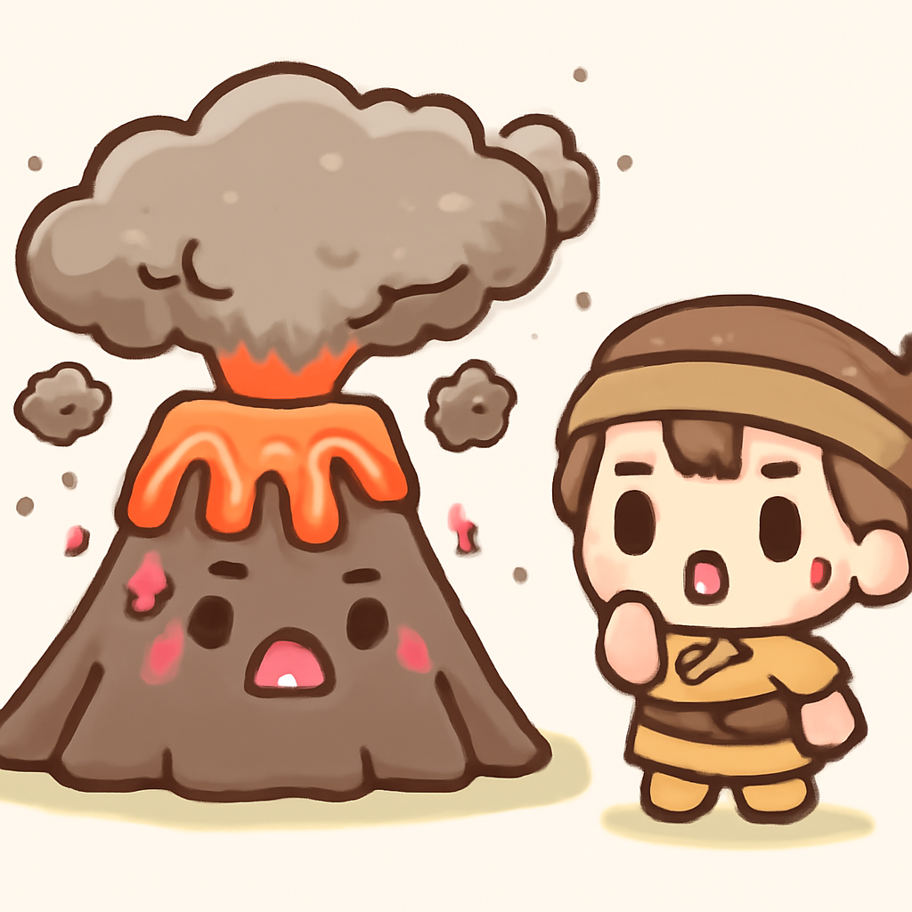
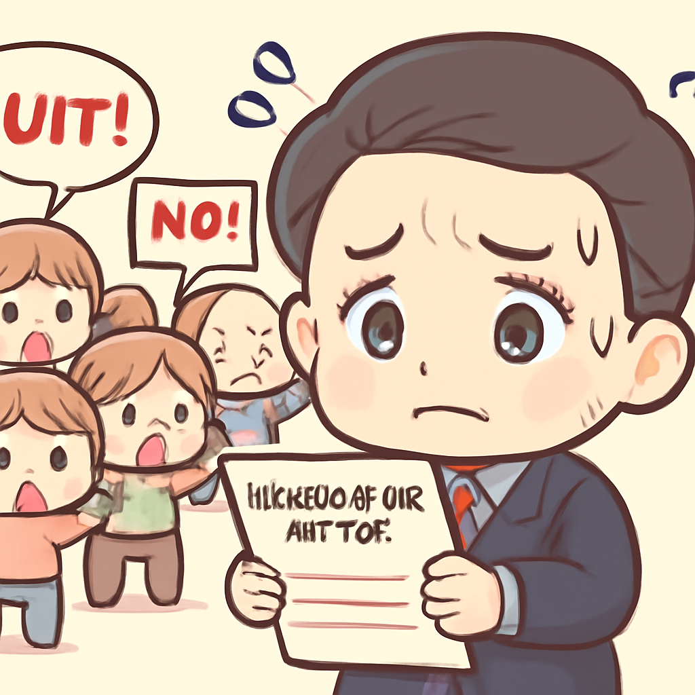

其一 · 伊朗 · 美國被指責軍事冒險
伊朗指責美國在外交談判桌上進行軍事行動。

在伊朗，外交部副部長阿巴斯·阿拉基（Abbas Araghchi）指責美國進行“魯莽的軍事冒險”，每當有外交解決方案的可能時，他們就會出手。這一言論引發了對美國和伊朗緊張局勢的擔憂，顯示兩國之間的外交努力仍然面臨重重困難。希望這場“冒險”不會讓我們的新聞頭條變得過於血腥。
🔗 原始新聞 ↗
2026-05-09 · 以古觀今，以笑抗愁
伊朗指責美國在外交談判桌上進行軍事行動。

在伊朗，外交部副部長阿巴斯·阿拉基（Abbas Araghchi）指責美國進行“魯莽的軍事冒險”，每當有外交解決方案的可能時，他們就會出手。這一言論引發了對美國和伊朗緊張局勢的擔憂，顯示兩國之間的外交努力仍然面臨重重困難。希望這場“冒險”不會讓我們的新聞頭條變得過於血腥。
🔗 原始新聞 ↗
俄烏雙方在慶祝活動期間宣布三天停火。
在烏克蘭，俄烏兩國宣布在慶祝蘇聯戰勝納粹德國的期間進行為期三天的停火。雖然雙方互相指責違反停火協議，但這一消息還是給了人們一線希望，或許接下來會有更多的對話。希望在煙火的背後，能夠看到和平的曙光。
🔗 原始新聞 ↗
印尼火山爆發發生後，當地人數人遇難。

在印尼，由於活火山的爆發，三人不幸遇難。當局早已發布登山警告，但還是有不少人不聽勸告攀爬。這次事件再次提醒我們，面對自然的力量，還是要多聽專家的話，否則可能會付出沉重的代價。希望這次的教訓能讓人們更加謹慎。
🔗 原始新聞 ↗
南非總統面對法院裁決，辭職呼聲高漲。

在南非，憲法法院裁定國會錯誤地阻止了對總統西里爾·拉馬福薩（Cyril Ramaphosa）的彈劾程序，這讓他的辭職壓力大增。隨著政治局勢的緊張，未來的南非政壇將變得更加不可預測。希望拉馬福薩能在這場風波中學會如何平衡權力與責任。
🔗 原始新聞 ↗
南非法院重新啟動針對總統的農場盜竊案調查。
南非法院最近決定重啟對總統拉馬福薩的農場盜竊案的調查，這個案件涉及六年前的金錢失竊事件。這一裁決可能會對南非的政治局勢產生重大影響，尤其是在當前的彈劾壓力下。希望這場政治鬧劇能夠以正義收尾，而不是再讓人民失望。
🔗 原始新聞 ↗